Hướng dẫn sử dụng VietPOS
Dành cho nhân viên bán hàng (thu ngân / quầy)
1. Đăng nhập
- Mở app VietPOS (máy tính quầy) hoặc trình duyệt theo hướng dẫn cửa hàng.
- Nhập email và mật khẩu do quản lý cấp → bấm Đăng nhập.
- Máy đã từng đăng nhập: có thể chọn tài khoản trong «Tài khoản trên máy này».
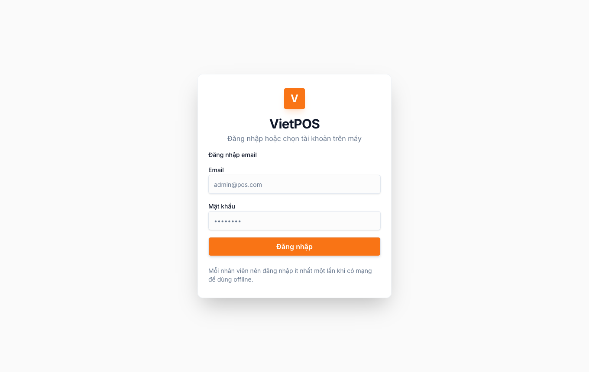
1b. Mã PIN 4 số (máy quầy) & quên PIN
Nhân viên bán hàng: lần đầu trên mỗi máy đăng nhập email + mật khẩu (cần mạng), sau đó đặt PIN 4 số cho máy đó. Các lần sau trên cùng máy: chọn tài khoản trong «Tài khoản trên máy này» → chỉ nhập PIN. Quản lý / admin shop: sau email/mật khẩu còn bước xác nhận PIN tài khoản (khác luồng PIN máy của staff).
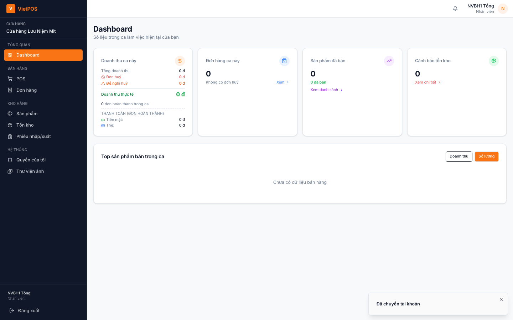
- Nhập sai nhiều lần → khóa PIN tối đa 5 phút (đếm ngược trên dialog).
- Quên mã PIN (staff / manager / admin shop, cần mạng): bấm Quên mã PIN? trên dialog → gửi yêu cầu. Quản lý vào Nhân viên bán hàng → «Yêu cầu quên mã PIN» → Để họ tự đặt hoặc Đặt PIN giúp.
- Super admin không gửi yêu cầu quên PIN trong app — liên hệ vận hành.
Ghép tablet Widget với quầy Desktop dùng PIN 4 số đã lưu trên máy quầy — xem Widget · Ghép quầy.
2. Màn hình sau khi đăng nhập
Menu trái được nhóm theo vai trò. Nhân viên bán hàng thường thấy:
- Tổng quan: Dashboard
- Bán hàng: POS, Đơn hàng
- Kho hàng: Sản phẩm, Tồn kho, Phiếu nhập/xuất
- Hệ thống: Quyền của tôi (và Thư viện ảnh nếu shop bật quyền xem)
Góc phải: chuông thông báo, avatar → Quyền của tôi, Phím tắt chức năng, Đăng xuất. Trên app Desktop (Tauri) còn có mục kiểm tra cập nhật và cài đặt camera / thiết bị LAN — xem thêm tài liệu Widget nếu dùng tablet ghép quầy.
Vào POS để bán hàng.
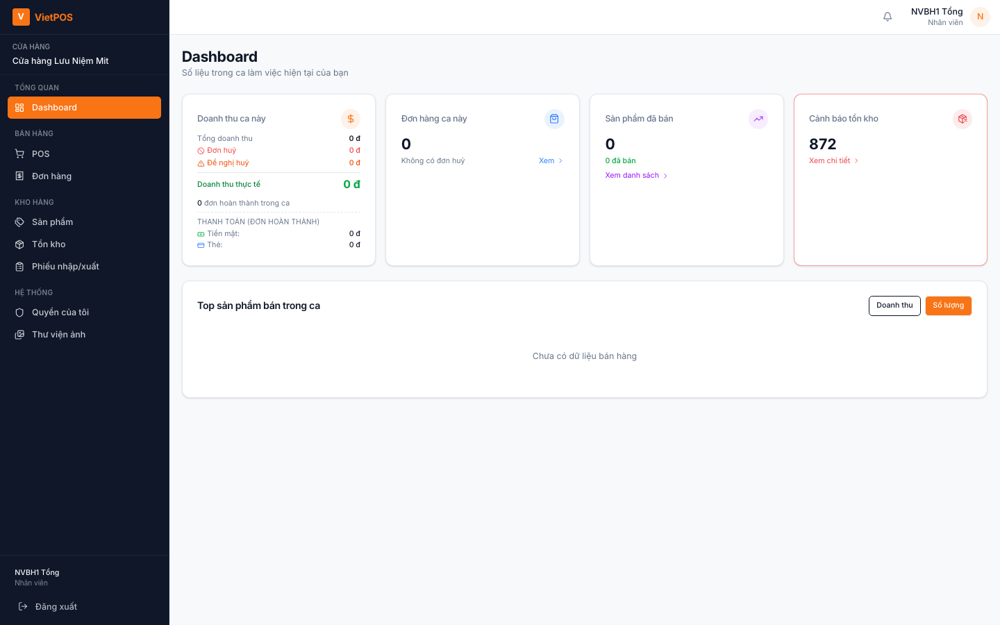
2b. Quyền của tôi & thiết bị
Menu Hệ thống → Quyền của tôi (hoặc avatar → Quyền của tôi): xem quyền được cấp, trạng thái PIN, đổi PIN khi được phép. Nếu shop bật duyệt thiết bị và máy chưa được duyệt, màn hình sẽ chặn — báo quản lý duyệt trong menu quản trị (nhân viên không tự bật).
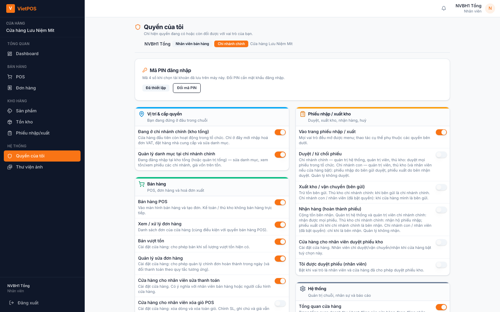
3. Mở ca làm việc
Trước khi bán: mở ca và chọn NV bán hàng (NV ca) để doanh thu ghi đúng người.
- Vào menu POS.
- Hộp thoại «Chọn nhân viên trong ca» hiện ra (bắt buộc trước khi bán) → tick ít nhất một NV bán hàng → Xác nhận.
- Thanh trên POS hiện NV ca: … (hoặc bấm Chọn NV ca để đổi NV trong ca).
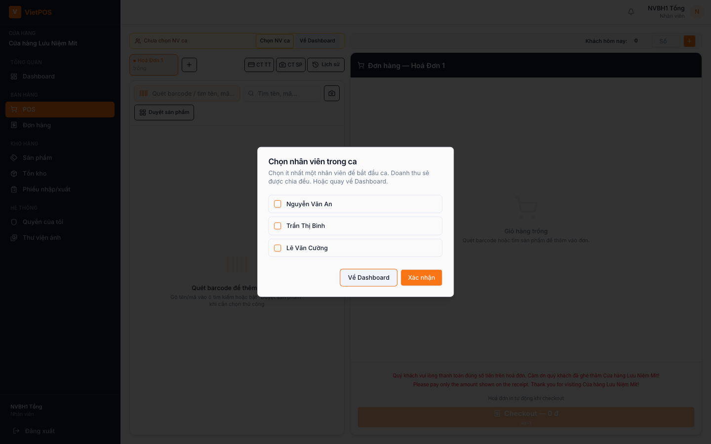
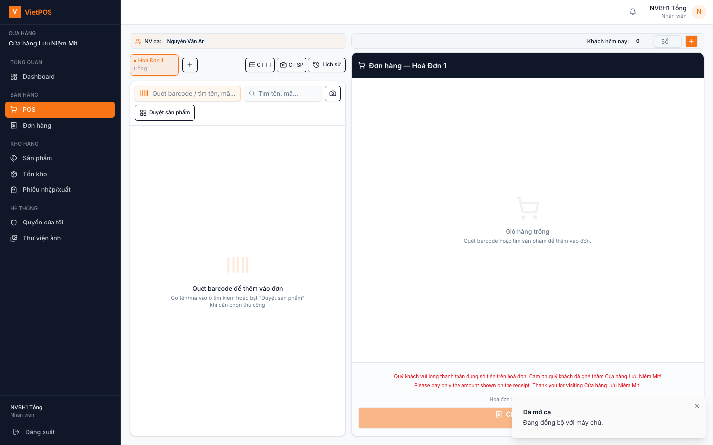
4. Bán hàng tại POS
4.1. Bố cục màn POS
- Trái: ô Quét barcode / tìm tên, mã…, ô Tìm tên, mã…, nút Duyệt sản phẩm (lưới); tab nhiều hóa đơn (+).
- Phải: giỏ hàng, chỉnh số lượng, nút Checkout — … đ.
- Bill in tự động khi checkout (nếu máy in sẵn sàng).
4.2. Thêm sản phẩm
- Quét / gõ mã vào ô «Quét barcode / tìm tên, mã…» → Enter (hoặc chọn dòng kết quả).
- Hoặc gõ tên / mã vào «Tìm tên, mã…» → chọn kết quả (↑↓ + Enter).
- Hoặc bấm Duyệt sản phẩm → bấm thẻ trên lưới.
- Chỉnh số lượng bằng nút + / − trên từng dòng giỏ.
- Dùng tab «Hoá đơn» + nút + nếu phục vụ nhiều khách cùng lúc.
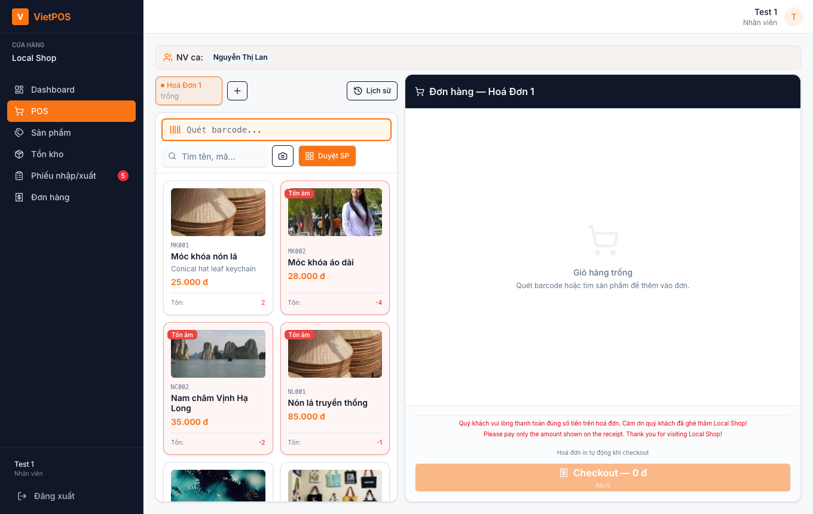
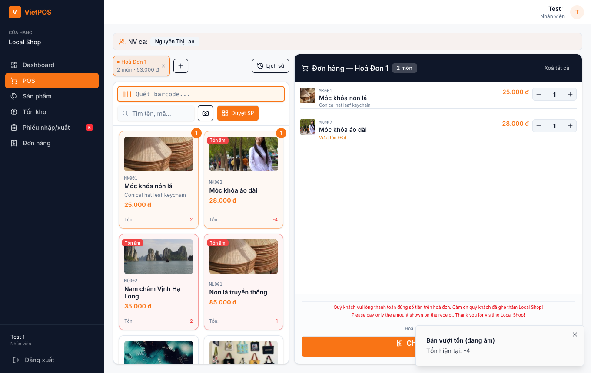
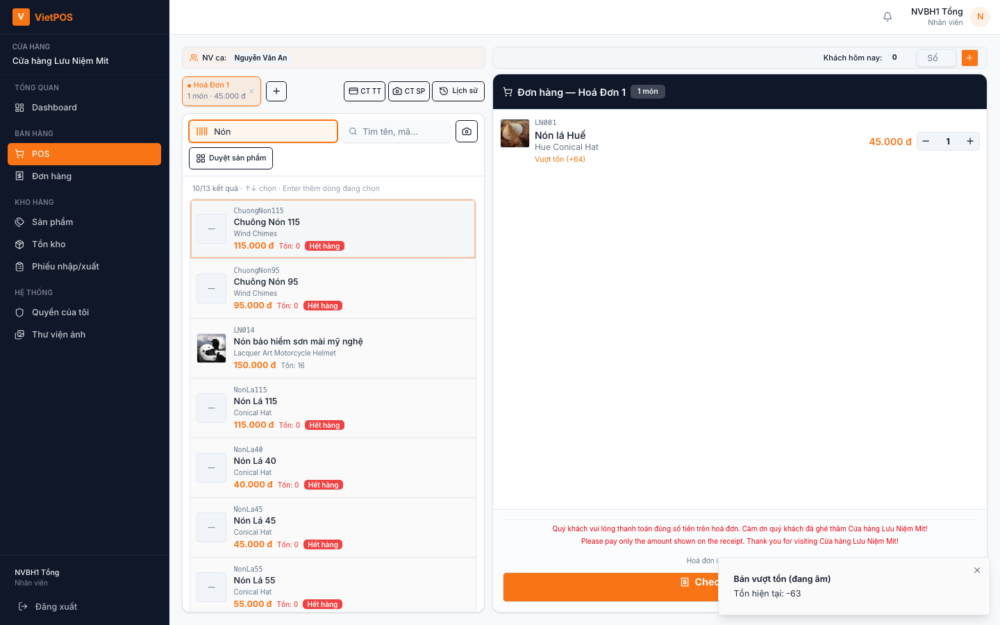
4.3. Checkout
- Kiểm tra món, số lượng, tổng tiền trên giỏ.
- Bấm Checkout — … đ (mặc định Alt+1 — xem mục 12).
- Hệ thống lưu đơn, mở cửa sổ Hóa Đơn / Receipt, đồng bộ lên máy chủ (nếu có mạng).
5. Hóa đơn sau checkout
Cửa sổ hóa đơn có hai phần: thao tác bên trái, xem trước bill bên phải.
5.1. Chọn hình thức thanh toán
- Tiền mặt — Alt+2
- Thẻ — Alt+3
- Chuyển khoản — Alt+4 (có thể bắt buộc chứng từ thanh toán — Alt+5 trên popup)
5.2. Ghi chú, GTGT, chứng từ
- Chứng từ thanh toán (popup) — Alt+5
- Chứng từ sản phẩm (popup) — Alt+6
- Thông tin hóa đơn GTGT — Alt+7
- Ghi chú đơn — Alt+8
- Trên màn POS (cạnh lịch sử): thư viện CT thanh toán / sản phẩm — Alt+Shift+5 / 6 (Desktop có thể thêm Alt+C bật/tắt chụp camera).
5.3. In bill
Bill thường in tự động sau checkout. Nếu chưa in (máy in tắt / chưa kết nối), hệ thống sẽ nhắc in lại khi có máy in. Kiểm tra giấy, cáp USB, nguồn máy in trước khi báo kỹ thuật.

6. Đề nghị hủy đơn
Nhân viên không tự hủy xong — gửi đề nghị hủy kèm lý do để quản lý duyệt. Khi duyệt, tồn kho được hoàn theo quy trình.
- Mở hóa đơn vừa bán (ngay sau checkout) hoặc mở lại đơn trong menu Đơn hàng.
- Ở mục Đề nghị huỷ đơn (Alt+9 trên popup hóa đơn), chọn lý do: Khách đổi ý / Khách không đủ tiền / Khác (ghi rõ).
- Bấm Gửi đề nghị huỷ.
- Theo dõi tab Đề nghị huỷ trong Đơn hàng; chờ quản lý duyệt.
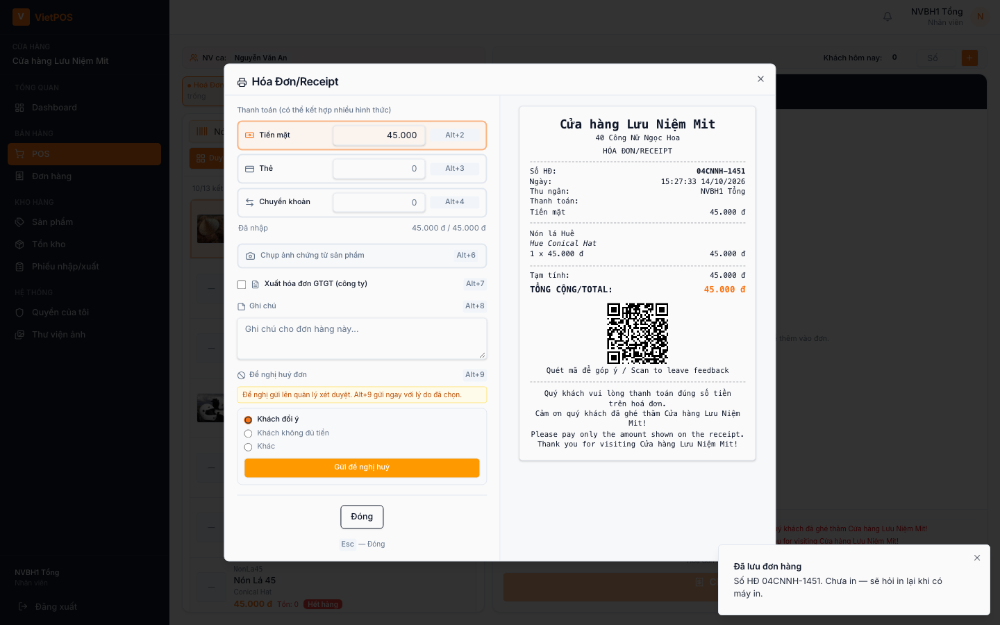
7. Đơn hàng trong ca
Menu Đơn hàng: xem đơn trong ca hiện tại (thường lọc Hôm nay). Tab: Hoàn thành · Đề nghị huỷ · Đơn huỷ · Ghi chú.
- In lại bill (biểu tượng máy in trên dòng đơn).
- Thêm / sửa ghi chú nếu được phép.
- Cuối danh sách có tổng doanh thu ca (tiền mặt / thẻ…).
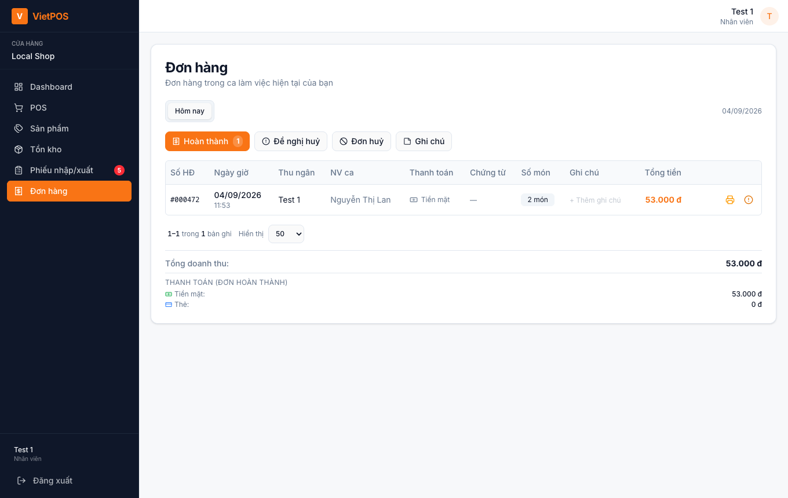
8. Tồn kho & sản phẩm
Xem số lượng còn và danh mục hàng. Giá vốn / một số cột nhạy cảm có thể ẩn với nhân viên.
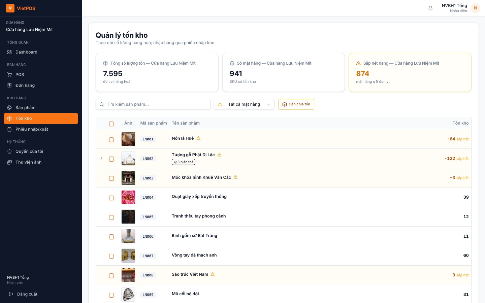
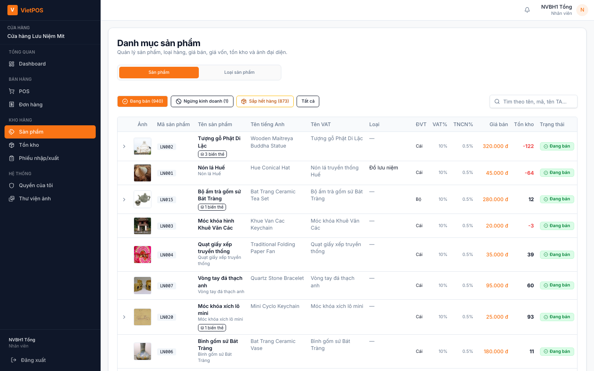
9. Phiếu nhập / xuất
Xem hoặc tạo phiếu theo quy trình cửa hàng. Duyệt phiếu thường do quản lý / thủ kho. Badge đỏ trên menu = có phiếu chờ xử lý (tùy quyền).
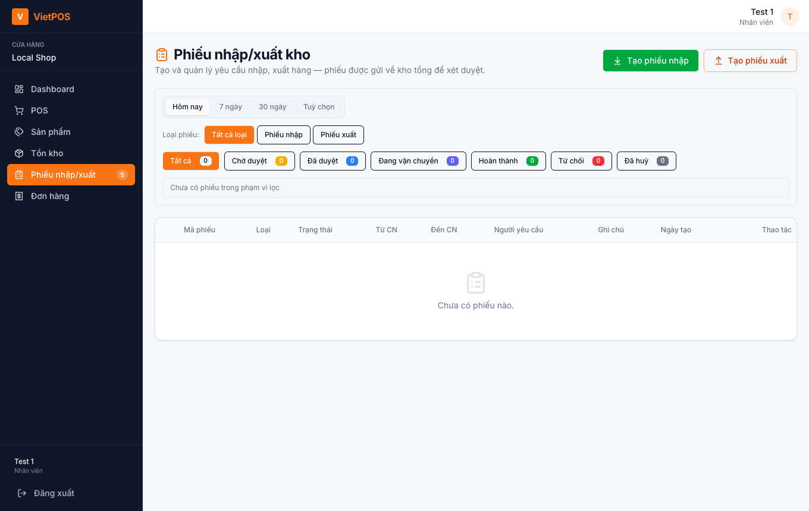
10. Làm việc khi mất mạng (offline)
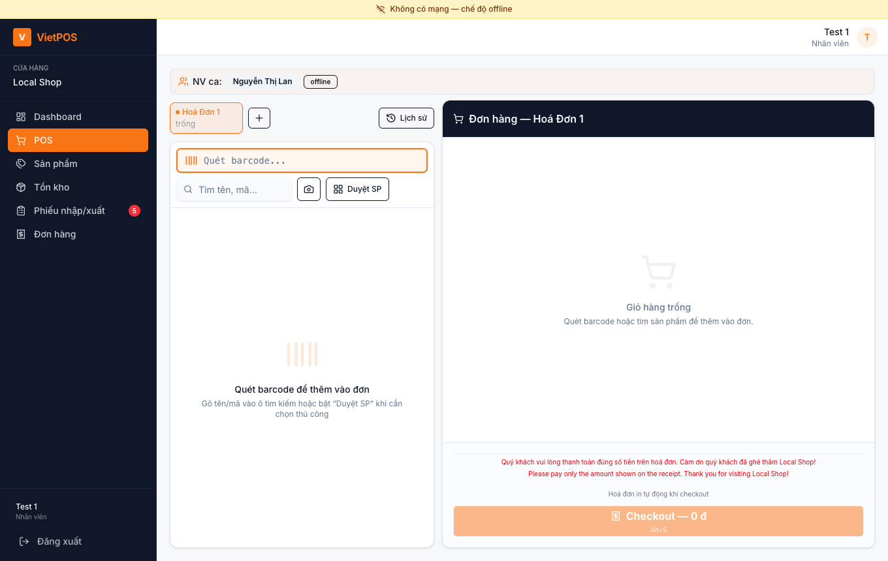
11. Đăng xuất & đóng ca
- Kiểm tra Đơn hàng trong ca (doanh thu, đề nghị hủy còn treo).
- Bấm Đăng xuất ở cuối menu trái (hoặc khu vực tài khoản).
- Hệ thống đóng phiên ca trên máy chủ khi còn mạng — nên đăng xuất khi còn mạng.
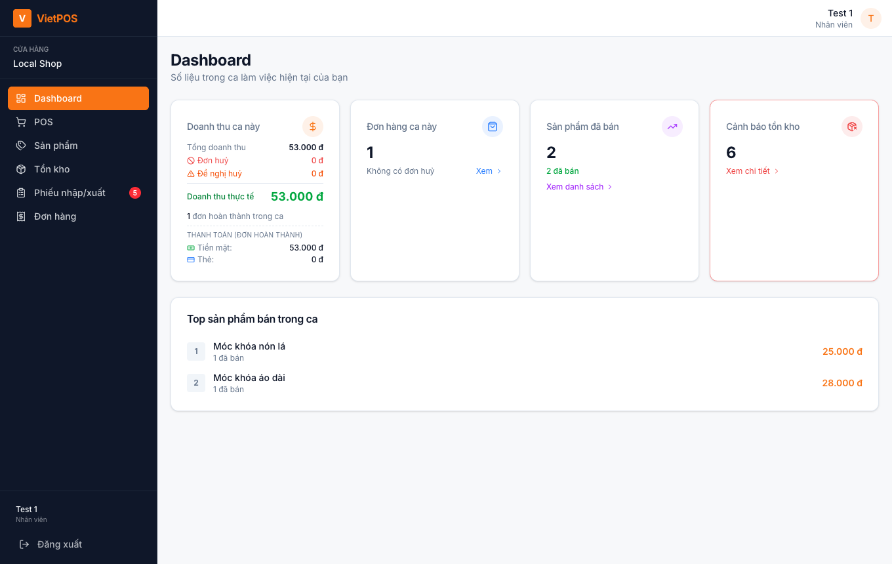
12. Phím tắt (mặc định — có thể đổi trong «Phím tắt chức năng»)
| Phím | Chức năng |
|---|---|
| Alt+1 | Checkout (màn POS, giỏ có hàng) |
| Alt+2 / 3 / 4 | Tiền mặt / Thẻ / Chuyển khoản (popup hóa đơn) |
| Alt+5 / 6 | Chứng từ thanh toán / sản phẩm (popup) |
| Alt+7 / 8 | Thông tin GTGT / Ghi chú đơn (popup) |
| Alt+9 | Huỷ / gửi đề nghị huỷ (popup, đã chọn lý do) |
| Tab | Luân phiên ô quét barcode ↔ số lượng dòng mới nhất (màn POS) |
| Esc | Đóng popup hóa đơn / hộp thoại |
Desktop: Ctrl+Shift+P mở cửa sổ POS phụ (nếu shop cấu hình). Chi tiết đầy đủ trong menu avatar → Phím tắt chức năng.
13. Nhiều quầy cùng lúc
- Mỗi quầy: máy riêng + tài khoản đăng nhập riêng.
- Mỗi người mở ca của mình, chọn đúng NV bán.
- Ưu tiên bán khi có mạng; offline chỉ khi thật sự mất kết nối.
14. Sự cố thường gặp
| Hiện tượng | Việc nên làm |
|---|---|
| Không đăng nhập được | Kiểm tra mạng, email/mật khẩu; báo admin |
| Không mở ca / thiếu NV | Báo admin cập nhật «NV bán hàng» (Đang làm) |
| Không tìm thấy SP | Đợi sync catalog; kiểm tra SP còn kinh doanh; thử Duyệt SP |
| Checkout không bấm được | Giỏ trống / thiếu ảnh chứng từ (nếu PT yêu cầu) |
| In bill không ra | Máy in, giấy, USB; dùng in lại trên hóa đơn / Đơn hàng |
| Banner offline / chờ sync | Giữ máy bật đến khi sync xong |
| Conflict khi sync | Báo quản lý xử lý — không xóa DB local |
| Thiết bị chưa duyệt | Màn «Thiết bị chờ duyệt» — báo quản lý duyệt máy quầy; không tự xóa dữ liệu |
| PIN máy / quên PIN | Quên PIN → yêu cầu trên dialog; quản lý duyệt tại Nhân viên bán hàng |
| Đề nghị hủy chưa duyệt | Nhắc quản lý; không bán lại cùng logic «xóa tay» |
15. Quy tắc làm việc gọn
- Đăng nhập → mở ca → chọn đúng NV bán.
- Quét / tìm đúng SP → kiểm tra giỏ → Checkout.
- Chọn đúng PT thanh toán; kiểm tra bill trước khi đưa khách.
- Hủy đơn chỉ qua «Đề nghị huỷ» + lý do.
- Hết ca: xem Đơn hàng → Đăng xuất khi còn mạng.
- Không tự ý đổi giá / xóa dữ liệu ngoài quy trình.
- Sự cố: ghi giờ + số HĐ + báo quản lý.